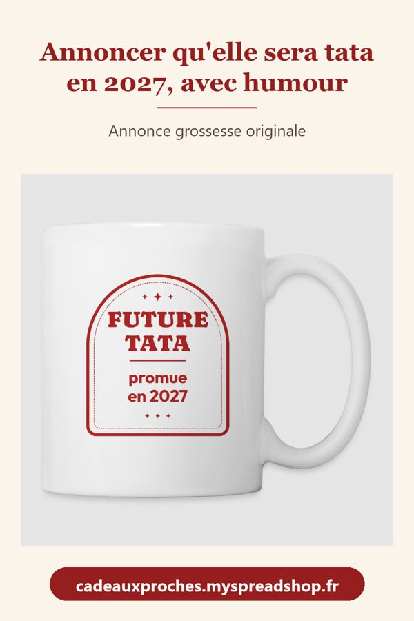
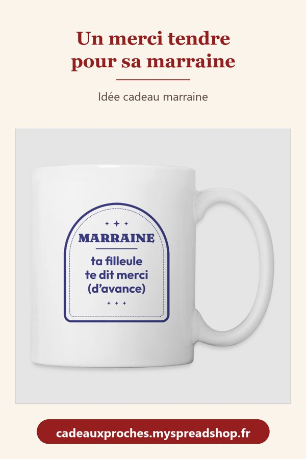

Avant de choisir : 3 questions rapides
1. Qui doit apprendre la nouvelle en premier ? Si vous voulez la garder pour Noël, prévenez d'abord les personnes qui risquent de gaffer (le petit frère bavard, la grand-mère).
2. Public ou en tête-à-tête ? Certaines personnes adorent être surprises devant toute la famille, d'autres préfèrent l'apprendre seules pour pleurer tranquillement. Pensez à son caractère, pas au vôtre.
3. Combien de temps avant ? Beaucoup de couples attendent la fin du premier trimestre pour l'annoncer au-delà des parents. C'est un choix personnel : faites ce qui vous convient.
10 idées d'annonce « tata »
1. Le mug-surprise. Offrez un mug en cadeau, sans un mot. En sortant le papier cadeau, elle lit « Future tata promue en 2027 ». Le message fait tout le travail, et elle garde un objet du quotidien qui rappelle ce moment chaque matin.

2. Le t-shirt à enfiler tout de suite. Même principe avec un t-shirt ou un sweat : pratique si vous voulez une photo de sa réaction, et elle peut le porter le soir même.
3. La « promotion » officielle. Écrivez un faux courrier de promotion : « Nous avons le plaisir de vous nommer tata, à compter de l'été 2027 ». Un humour de bureau qui plaît aux adultes.
4. L'échographie dans un livre. Glissez la photo d'échographie dans un livre qu'elle ouvrira (un livre de cuisine, un roman qu'elle réclamait). Simple, intime, sans mise en scène.
5. Le message dans la boîte. Une boîte de chocolats ou une tasse avec un petit mot caché au fond. Pensez au côté pratique si elle est loin : ça se poste.
6. La chasse au trésor miniature. Trois indices dans la maison, le dernier mène à une paire de chaussons. Idéal pour des neveux ou des nièces qui participent.
7. L'annonce par les enfants. S'il y a déjà un enfant dans la famille, il peut remettre l'enveloppe : « Tata, j'ai une nouvelle pour toi ». Ça marche à tous les coups, à condition de lui avoir fait répéter la phrase (et qu'il tienne le secret jusque-là).
8. Le puzzle ou la carte à gratter. Un puzzle dont l'image finale contient l'annonce, ou une carte à gratter. Il faut un peu de temps, donc à réserver à un après-midi calme.
9. La vidéo à distance. Si elle habite loin, une courte vidéo avec le message écrit sur une ardoise. Mieux vaut l'envoyer au moment où vous êtes disponible pour la voir réagir en direct.
10. Le repas de Noël ou de fêtes. Un petit paquet au pied du sapin, ouvert devant tout le monde. C'est l'occasion où toute la famille est réunie, donc l'annonce est vécue ensemble.
Les erreurs à éviter
- Annoncer à la place des futurs parents. Si vous êtes la tata ou le tonton, attendez leur feu vert.
- Un cadeau trop gros, trop tôt. Un message simple suffit. L'émotion vient de la nouvelle, pas de la valeur du cadeau.
- Oublier le tonton. Le futur tonton aussi aime sa « promotion » : pensez à l'inclure.
- Choisir un objet qui ne se garde pas. Un mug ou un vêtement reste utilisable longtemps, une carte finit dans un tiroir.
Pour l'idée n°1 : le mug « Future tata »
Nous avons dessiné une petite collection d'objets à message pour la famille : tata, tonton, marraine, et la célèbre question « Veux-tu être ma marraine ? ». Les articles (mug, t-shirt, sweat, sac) sont fabriqués à la demande par Spreadshirt et expédiés en France.

Voir les modèles « future tata » sur SpreadshirtTransparence : ce lien mène aux résultats « future tata » de Spreadshirt, où figurent nos propres modèles (parmi ceux d'autres créateurs). Les délais de livraison et les frais sont affichés au moment de la commande. Pour un cadeau de Noël, commandez tôt.
Questions fréquentes
Quand annoncer une grossesse à la famille ? Il n'y a pas de règle : beaucoup attendent la première échographie, d'autres préviennent leurs proches très tôt. Choisissez ce qui vous rassure.
Comment dire « tu vas être tata » sans cadeau ? Une phrase simple, en tête-à-tête, suffit toujours. Les idées ci-dessus sont des bonus, pas une obligation.
Et pour demander à quelqu'un d'être marraine ? Même logique : un petit objet avec la question écrite dessus, remis en main propre, avec un peu de temps pour que la personne puisse réagir sans témoin.